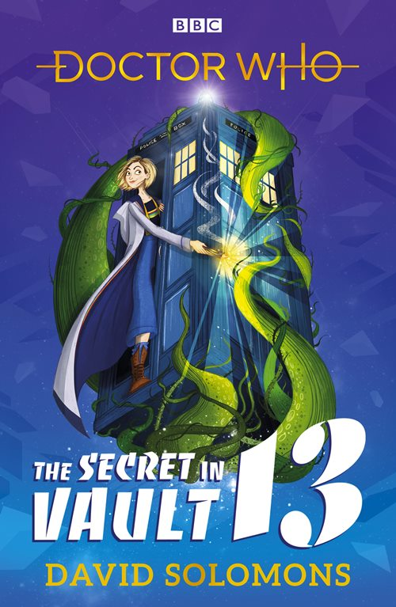

|
The Secret in Vault 13
|
BASIC PLOT DOCTOR COMPANIONS MATERIALISATION CIRCUIT Pg 23 In Graham's front room, present day. Pg 33 On a small hill, Tellus IV. Pg 53 On a snowy plateau, Calufrax Major. Pg 107 New Phaeton, 4028. Pg 164 London, 2018. Pg 233 London again. Pg 239 Vault Thirteen, Calufrax Major. Pg 269 On board the Gardeners' command ship. Pg 286 Svalbard islands, likely the present day. PREPARATORY READING CONTINUITY REFERENCES Pg 17 "Whether they were a twelve-eyed spider from Metebelis III or a short-sighted earthling, their response was always the same" Planet of the Spiders. But see Continuity Cock-Ups. Pgs 18-19 "Just like the Time Lords who built them, every TARDIS had two hearts: the engine room with its near-magical power source, the Eye of Harmony, and the circular console room." The Telemovie. Pg 21 "And, until the business with the Tzim-Sha, she'd never met his granddad." The Woman Who Fell to Earth. "Ryan rooted about in a toolbox, then passed her a flat bar of rectangular metal with a wooden handle." The TARDIS toolbox makes an appearance (The Hand of Fear et al). Pg 25 "Argolis, the Leisure Hive, offers -" The Leisure Hive. Pg 29 "Though, it could be a Krynoid... Sarah Jane and I had a few problems with one of those." Technically with two of them, in The Seeds of Doom. Pg 41 "The Galactic Seed Vault is on the ice planet of Calufrax Major." Seen in The Pirate Planet. But see Continuity Cock-Ups. Pg 51 "Spotting a multicoloured scarf, he plucked it off its hanger." The fourth Doctor's scarf. Pg 52 "'You never told me that you'd met the Yetis!' The Doctor was beaming at Yaz. 'Cuddly, but fierce. Robots, of course...'" The Abominable Snowmen et al. Pg 54 "As with the TARDIS, Ryan was fascinated by the sonic." Fury From the Deep et al. Pg 57 "A challenge for most people, this would be doubly difficult for him, as he suffered from dyspraxia" The Woman Who Fell to Earth. Pg 66 "'Venusian aikido,' said the Doctor." Inferno et al. Pg 83 "And I'd bet a box of the finest Judoon chocolates that's where we'll discover the true target of this attack." Smith and Jones et al. Pg 92 "I haven't had to collect a set of apocalypse-averting keys for ages." The Keys of Marinus, The Key to Time. "Last time it was one, but in six pieces." The Key to Time. Pg 130 "She was prowling around the grandfather clock, eyeing it suspiciously. [...] 'Knew someone once who had a TARDIS that looked like one of these.'" The Master, in The Deadly Assassin and The Keeper of Traken. Pg 136 "He wasn't diagnosed with dyspraxia until he was in high school" The Woman Who Fell to Earth. Pg 140 "Home world of the Ice Warriors?" The Martians were first seen in The Ice Warriors. Pg 141 "Rassilon Junior loves anything with wheels, though he's a cautious child, especially around roller coasters after an incident at Hedgewick's World of Wonders." Rassilon was first mentioned in The Deadly Assassin and seen in The Five Doctors. Hedgewick's World of Wonders featured in Nightmare in Silver. Pg 158 "15. Exterminate" The chapter title explicitly refers to pest extermination, but if riffing off the Daleks' favourite word. Pg 168 "Used to be that, to access the circuits, youshoved your hands into a blob of telepathic gel, but that was not hygenic." Listen et al. "I mean, it's not like mentally duelling the brain of Morbius was." The Brain of Morbius, unsurprisingly. Pg 203 "It's on Skaro and on Gallifrey." Skaro was first seen in The Daleks. Pg 214 "'To unclog a blocked drain, the best thing to use is your trusty plunger,' said the hologram. 'If you haven't got one handy, try borrowing one from a Dalek.'" Well, you can try... (You probably know who the Daleks are.) Pg 217 "'They're all in here,' he had said, then proceeded to reel off a list of strange names. 'Autons, Ogrons, Daemons, Plasmatons, Cryons, Zygons...'" "The list continued, seemingly as endless as the corridor. 'Draconians, Osirians, Silurians, Sontarans...'" Pg 218 "The boy's words stalked her down the corridor. 'Kraals, Thals, the Fendahl, Haemovores, Tritovores...'" The Android Invasion, The Daleks et al, Image of the Fendahl, The Curse of Fenric, Planet of the Dead. "Robots of Death, the K1 Robot, the Kandyman, L3 robots, White Robots, Handbots, Illyria Seven robots, robot knights..." The Robots of Death, Robot, The Happiness Patrol, XXX, Robot of Sherwood. "Ice Warriors, Sea Devils, War Machines, Time Zombies, Weeping Angels..." The Ice Warriors, The Dea Devils, The War Machines, XXX, Blink et al. Pg Pg 219 "Every monster the Doctor has faced. 'Voord, Ood, Judoon, Mandrels, Argolins, Destroyers...'" The Keys of Marinus, The Impossible Planet et al, Smith and Jones et al, Nightmare of Eden, The Leisure Hive et al, Battlefield. (One might quibble and say that not all of these are monsters, per se.) "Jagrafess, Reapers, Pyroviles, Silents..." The Long Game, Father's Day, The Fires of Pompeii, The Impossible Astronaut et al. "Snowmen, Whisper Men, Cybermen..." The Snowmen, The Name of the Doctor, The Tenth Planet et al. "It was coming for her. She could hear it, snorting, groaning, screeching. 'Extermi-'" Daleks. Pg 243 "On the face of it an ordinary Yale key, it was in reality a highly advanced piece of technology, with a plasmic shell incorporating a low-level perception filter, resistant to almost anything but prolonged exposure to lava" The TARDIS key's perception filter was important in The Sound of Drums, while its destruction in lava (virtually) happens in Dark Water. Pgs 247-248 "Entropy wave that causes universal heat death? Reality bomb? Dimensional transference triggered by a black-light explosion? Every star exploding at every point in history?" Logopolis, Journey's End, The Mysterious Planet, The Big Bang. "Got it in the gift shop on the planet Shada." Shada, The Krikkitmen. Pgs 272-273 "Following the trail of musical notes, she swung past the gates of a school, noting the name on a plaque at the entrance: COAL HILL." An Unearthly Child et al. Pg 273 "Printed across them was the name of a business and its address: I.M. FOREMAN, SCRAP MERCHANT. 76 TOTTER'S LANE." An Unearthly Child et al. Pg 278 "Know a lot about the TARDIS Drive, do you? Transpower system? Dynamorphic generators? Ringing any Cloister Bells? When was the last time you used Zeiton-Seven to transfer the Eye of Harmony's energy into orbital atron energy, eh?" XXX, XXX, Logopolis et al, Vengeance on Varos, The Deadly Assassin et al. Pg 281 "We could try reversing the polarity of the neutron flow. That usually works." The Sea Devils et al. OLD FRIENDS AND OLD ENEMIES NEW FRIENDS AND NEW ENEMIES Aaron, Lalitha, Peyton, Porter. Tom Manners, Delgado, Jonathan, Professor Tarkovsky.
CONTINUITY COCK-UPS PLUGGING THE HOLES [Fan-wank theorizing of how to fix continuity cock-ups] FEATURED ALIEN RACES Pg 7 An alien species we don't learn much about except that they're famed for their eyesight. Pg 18 The aquatic Dalse, who live in acid pools. Feather-light Chentans, who live in Zero-G. Zraryx, who build lava nests. A three-headed Hydran. Pg 37 The Gardeners, tree-like beings covered in leaves, with thick gnarled legs, padded knees, flaps over their noses, one arm ending in a fork-shaped hand with tapering green fingers and the other in a pair of secateurs. Pg 55 Frost Lepuses, rabbit-like creatures. Pg 63 The Attendant is a beetle-like creature. Pg 78 The Curatrix is a holographic avatar of the intelligence that runs the Vaults. Pg 87 A dopplepod, which can mimick the form of any predator that breathes on it. A Venusian gulper, which consumes its prey whole and digests it over a period of months. Pg 106 Spectres, shark-like jellyfish that swim through the air. Pg 127 M8-Tron, a triangular medical robot with six arms and an oval head. Pgs 131/133 The Faculty is a creature made up of multiple humans, having two heads (one male, one female), a brawny male arm and a delicate female arm. Pg 201 A giant mole, the size of a grizzly bear. FEATURED LOCATIONS Pg 23 London, present day. Pg 32 Tellus IV, time unknown. Pg 53 Calufrax Major Pg 84 A transport capsule. Pgs 103/143 New Phaeton, 4028. Pg 158 London, 2018. Pg 253 Nightshade's command ship. Pg 285 The Svalbard islands, likely the present day. IN SUMMARY - Robert Smith? |
|
 |